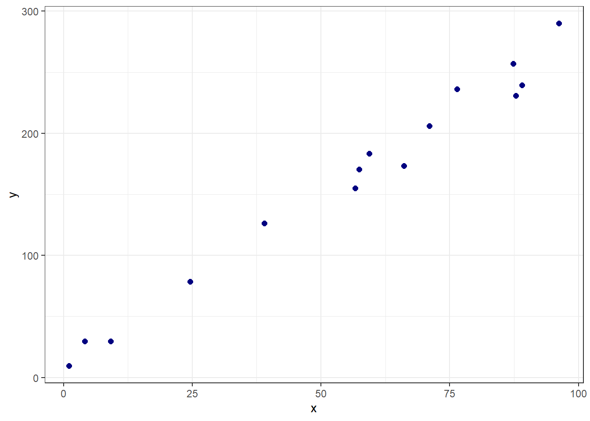
3 Regressão linear simples, múltipla e polinomial
3.1 Regressão linear simples, múltipla e polinomial
3.1.1 Regressão linear simples
Seja um problema onde deseja-se prever uma resposta contínua, \(y \in \mathbb{R}\), em função de uma única variável independente também contínua, \(x \in \mathbb{R}\). Conforme observado graficamente na Figura 3.1, pode-se considerar em diversos casos a aproximação de uma função linear para tal relação.
Tal aproximação pode ser descrita pela Equação à seguir, onde \(\hat{y}\) consiste no valor predito de \(y\), \(\beta_0\) e \(\beta_1\) são coeficientes chamados de intercepto ou constante e coeficiente linear ou inclinação, respectivamente. Enquanto \(\beta_0\) mede o valor da resposta prevista para \(x=0\), \(\beta_1\) consiste na mudança média da resposta para o incremento de uma unidade de \(x\).
\[ \hat{y} = \beta_0 + \beta_1x \]
A Figura 3.2 plota para os dados plotados anteriormente a linha azul do modelo de regressão linear simples obtido.
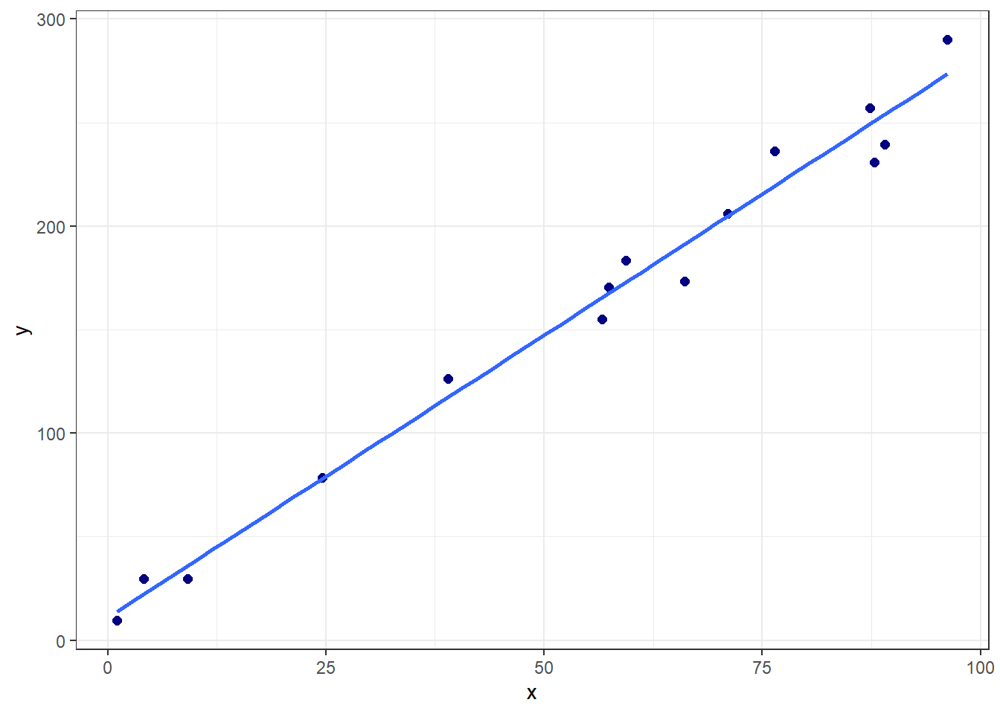
Para este caso inicial os coeficientes de regressão estimados são:
(Intercept) x
10.927762 2.728817 A primeira pergunta a ser feita seria como estimar tais coeficientes de regressão. Pode-se pensar em estimativas que minimizem o erro de previsão. Conforme, plotado na Figura 3.3 em linhas verticais vermelhas, o erro de previsão seria a diferença entre o valor experimental e o previsto, \(\varepsilon_i = y_i - \hat{y}_i\), \(i = 1, ...., N\).
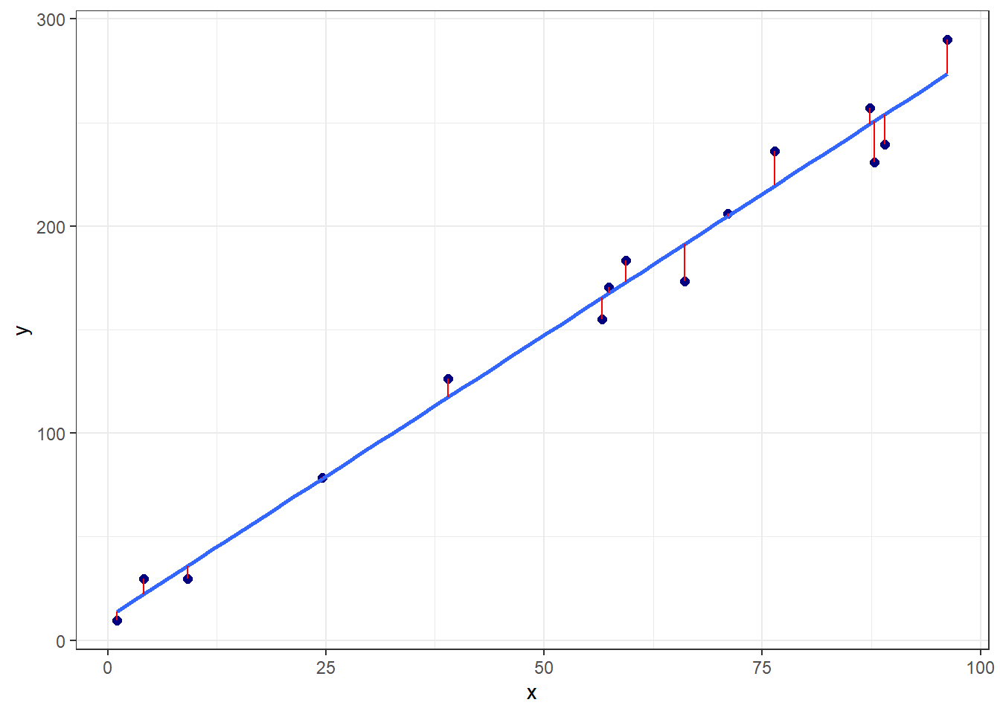
Neste sentido, as observações da variável dependente ou resposta podem ser descritas conforme segue.
\[ \begin{aligned} y_i = \hat{y}_i + \varepsilon_i \\ y_i = \beta_0 + \beta_1x_i + \varepsilon_i \\ \end{aligned} \]
Tomando \(N\) observações retiradas da população de interesse, \((x_1, y_1), (x_2, y_2), ..., (x_N, y_N)\), pode-se pensar em um modelo que minimize os erros de previsão para a amostra disponível. Uma vez que o erro é normalmente distribuído, com média nula e variância \(\sigma_\varepsilon^2\), sendo os resíduos normalmente distribuídos, com média nula e variância igual a \(\sigma_\varepsilon^2\), \(\varepsilon \sim N(0,\sigma_\varepsilon^2)\), pode-se trabalhar a minimização da soma dos quadrados dos erros de previsão, \(\sum_{i=1}^{N}\varepsilon_i^2\).
A Tabela 3.1 expõe algumas das observações para os dados plotados anteriormente, bem como os valores preditos e erros associados.
| x | y | y_hat | erro |
|---|---|---|---|
| 1.093333 | 9.389117 | 13.91127 | -4.5221504 |
| 4.106335 | 29.785746 | 22.13320 | 7.6525477 |
| 9.138367 | 29.774229 | 35.86469 | -6.0904613 |
| 24.613730 | 78.467084 | 78.09412 | 0.3729679 |
| 38.963445 | 126.273606 | 117.25185 | 9.0217521 |
| 56.628047 | 155.103936 | 165.45531 | -10.3513755 |
A sintaxe anteriormente apresentada pode ser escrita de forma matricial, conforme segue, onde \(\mathbf{x}_{[2 \times N]}\) consiste em uma matriz relacionada às observações independentes, com uma coluna de valores unitários associada à \(\beta_0\) e outra com as observações de \(x\), portanto associada a \(\beta_1\). \(\mathbf{y}_{[N\times1]}\) consiste no vetor de observações da resposta, \(\mathbf{\varepsilon}_{[N\times1]}\) consiste no vetor de erros ou resíduos de previsão e \(\mathbf{\beta}_{[2\times1]}\) consiste em um vetor de coeficientes.
\[ \begin{aligned} \mathbf{y} = \mathbf{X}\mathbf{\beta} + \mathbf{\varepsilon} \end{aligned} \]
Tais elementos matriciais podem ser escritos de forma genérica conforme segue.
\[ \mathbf{X} = \begin{bmatrix} 1 & x_{1}\\ 1 & x_{2}\\ \vdots & \vdots \\ 1 & x_{N}\\ \end{bmatrix} = \begin{bmatrix} 1 & 1.093\\ 1 & 4.106\\ \vdots & \vdots \\ 1 & 96.206\\ \end{bmatrix} \]
\[ \mathbf{y} = \begin{bmatrix} y_{1}\\ y_{2}\\ \vdots \\ y_{N}\\ \end{bmatrix} = \begin{bmatrix} 9.389\\ 29.786\\ \vdots \\ 290.028\\ \end{bmatrix} \]
\[ \mathbf{\varepsilon} = \begin{bmatrix} \varepsilon_{1}\\ \varepsilon_{2}\\ \vdots \\ \varepsilon_{N}\\ \end{bmatrix} = \begin{bmatrix} -4.522\\ 7.653\\ \vdots \\ 16.571\\ \end{bmatrix}\text{, e} \\ \]
\[ \mathbf{\beta}^T = \begin{bmatrix} \beta_0 & \beta_1\\ \end{bmatrix} = \begin{bmatrix} 10.928 & 2.729 \\ \end{bmatrix} \]
Tomando tal notação, a soma dos quadrados dos erros pode ser descrita como \(\sum_{i=1}^{N}\varepsilon_i^2 = \mathbf{\varepsilon}^T\mathbf{\varepsilon}\). Desenvolvendo tal expressão tem-se:
\[ \begin{aligned} L(\mathbf{\beta}) = \mathbf{\varepsilon}^T\mathbf{\varepsilon} = (\mathbf{y} - \mathbf{X}\mathbf{\beta})^T(\mathbf{y} - \mathbf{X}\mathbf{\beta}) \\ \mathbf{y}^T\mathbf{y} - 2\mathbf{\beta}^T\mathbf{X}^T\mathbf{y} + \mathbf{\beta}^T\mathbf{X}^T\mathbf{X}\mathbf{\beta} \end{aligned} \]
Para minimizar \(L\) em relação à estimativa de \(\mathbf{\beta}\), pode-se diferenciar tal quantidade em relação à \(\mathbf{\beta}\) e igualar a zero:
\[ \begin{aligned} \frac{\partial L}{\partial \mathbf{\beta}} = -2\mathbf{X}^T\mathbf{y} + 2\mathbf{X}^T\mathbf{X}\mathbf{\beta} = 0 \\ \hat{\mathbf{\beta}} = (\mathbf{X}^T\mathbf{X})^{-1}(\mathbf{X}^T\mathbf{y}) \end{aligned} \]
Tal solução constitui as chamadas equações normais de mínimos quadrados.
Ao obter um modelo de regressão é sempre importante observar os resíduos, os quais devem ser normalmente distribuídos, independentes e homocedásticos. Tais pressuposições implicam que o modelo obtido por mínimos quadrados é paramétrico, uma vez que pressupõe-se uma distribuição para os resíduos. Neste curso de aprendizado não supervisionado, serão estudados diversos modelos que não implicam qualquer distribuição acerca dos resíduos ou dados sendo, portanto, livres de distribuição e ditos não-paramétricos. A Figura 3.4 expõe alguns gráficos dos resíduos os erros do modelo obtido, os quais podem servir para avaliação da normalidade do modelo, bem como para identificação de observações não usuais.
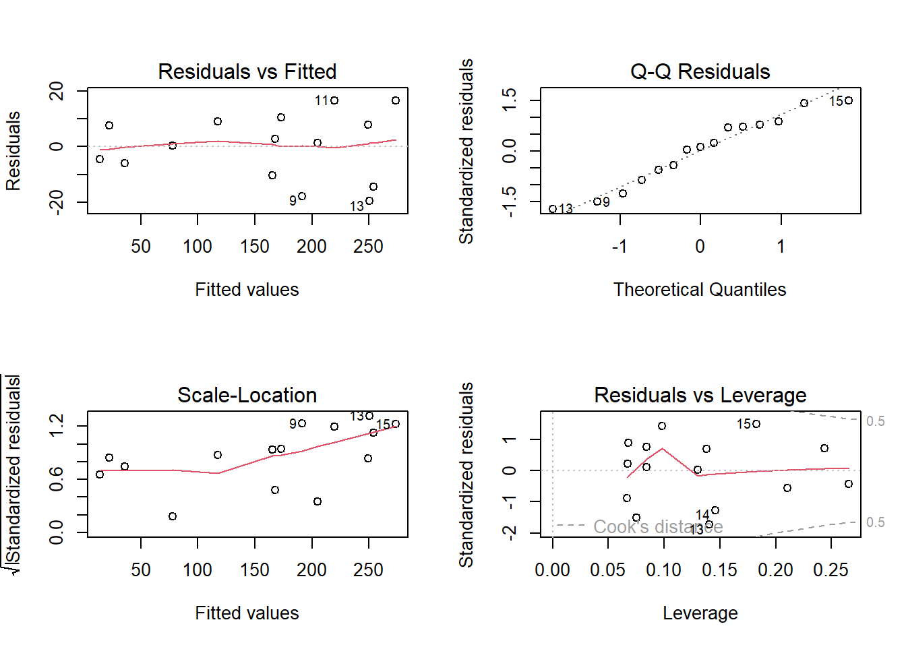
3.1.2 Regressão linear múltipla
No caso de onde há múltiplas variáveis independentes ou regressoras de interesse, \(x_1, x_2, ..., x_k\) pode-se considerar o modelo com um coeficiente linear associado a cada variável, isto é:
\[ \hat{y}_i = \beta_0 + \beta_1x_{i1} + \beta_2x_{i2} + \cdots + \beta_kx_{ik} = \beta_0 + \sum_{j=1}^{k}\beta_jx_{ij}, \]
ou de forma matricial com \(\mathbf{X}_{[N\times (k+1)]}\) e \(\mathbf{\beta}_{[(k+1) \times 1]}\):
\[ \begin{aligned} \hat{\mathbf{y}} = \mathbf{X}\mathbf{\beta} \end{aligned}, \] com:
\[ \mathbf{X} = \begin{bmatrix} 1 & x_{11} & x_{12} & \cdots & x_{1k}\\ 1 & x_{21} & x_{22} & \cdots & x_{2k} \\ \vdots & \vdots & \vdots & \ddots & \vdots\\ 1 & x_{N1} & x_{N2} & \cdots & x_{Nk} \\ \end{bmatrix}, e\\ \]
\[ \mathbf{\beta}^T = \begin{bmatrix} \beta_0 & \beta_1 & \cdots & \beta_k\\ \end{bmatrix}. \\ \]
As estimativas de mínimos quadrados, deduzidas para o caso simples, \(\hat{\mathbf{\beta}} = (\mathbf{X}^T\mathbf{X})^{-1}(\mathbf{X}^T\mathbf{y})\), também atendem ao caso múltiplo. Uma forma de medir o ajuste do modelo obtido aos dados seria a partir do cálculo do coeficiente de determinação múltipla, \(R^2\), conforme segue,
\[ \begin{align} R^2 = 1- SS_{E}/SS_T \\ R^2 = 1- \frac{\sum_{i=1}^{N}(y_i-\hat{y}_i)^2}{\sum_{i=1}^{N}(y_i-\overline{y}_i)^2}, \end{align} \]
ou utilizando outras métricas de ajuste. É interessante que tais métricas sejam também calculadas para dados futuros ou de teste, de forma a evitar sobreajuste do modelo. Uma observação importante é relacionada à utilização da Análise de variância (ANOVA) para obtenção de tais métricas. Além do \(R^2\), ao se utilizar a ANOVA, há a possibilidade de calcular o coeficiente de determinação ajustado, \(R^2_{adj}\), isto é:
\[ R^2_{adj} = 1 - \frac{SS_{E}/(N-k)}{SS_T/(N-1)} \]
Esta métrica é mais honesta uma vez que penaliza o modelo pela adição de mais coeficientes. O \(R^2\) sempre aumentará com adição de novos coeficientes, enquanto o \(R^2_{adj}\) será mais baixo casos novos termos adicionados não apresentem significância estatística. Entretanto, quando outros métodos de aprendizado não paramétricos são utilizados, especialmente os que não tem origem na estatística mas na computação, tal métrica não pode ser calculada. No contexto de aprendizado supervisionado é mais interessante realizar a validação cruzada e estimar o desempenho do modelo em dados futuros, viabilizando a comparação de tipos distintos de modelos.
O teste t para os coeficientes de regressão pode ser calculado para medir a significância de cada coeficiente e testar as seguintes hipóteses para cada coeficiente de regressão.
\[ \begin{matrix} H_0: \beta_j = 0 \\ H_1: \beta_j \neq 0, j = 1, ..., k\\ \end{matrix} \]
O teste é calculado conforme segue, onde \(C_j\) é o valor da \(j\)-ésima linha e \(j\)-ésima coluna da matriz \((\mathbf{X}^T\mathbf{X})^{-1}\), correspondente a \(\beta_j\). A hipótese nula é rejeitada se \(t_{0j} > t_{[\alpha/2,N-k]}\), onde \(\alpha\) é o nível de significância de interesse.
\[ t_{0j} = \frac{\hat{\beta}_j}{\sqrt{C_jSS_E/(N-k)}} \]
Analogamente, estimativas intervalares para os coeficientes podem ser obtidas como segue, as quais consistem em intervalos que garantem \(\gamma = 1-\alpha\) de confiança de encontrar os verdadeiros valores dos coeficientes de regressão.
\[ \hat{\beta}_j \pm t_{[\alpha/2,N-k]}\sqrt{C_jSS_E/(N-k)} \]
A Figura 3.5 ilustra graficamente um modelo de regressão linear múltipla para prever o preço de carros usados em função da idade e quilometragem.
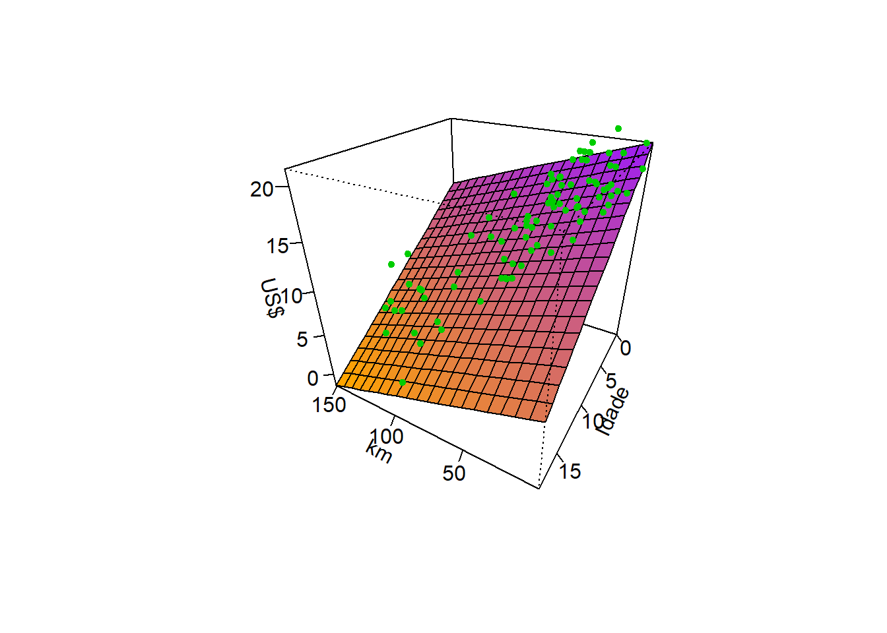
Para este caso, os coeficientes estimados são apresentados a seguir. Estes foram estimados nas unidades originais das variáveis. Porém, para fins de inferência, é importante padronizar as variáveis regressoras.
(Intercept) Mileage Age
21.54307990 -0.05314626 -0.84234949 O modelo pode ser escrito conforme segue.
\[ \hat{y} = 21,543 - 0,0531x_1 - 0,842x_2 \]
O teste t para os coeficientes de regressão resultante é apresentado a seguir. As duas variáveis regressoras foram antes padronizadas para evitar efeito de escala e unidade de medida. Como \(|t_{\alpha/2,N-k}|\) = 1.987, tem-se que todos os coeficientes são significativos, uma vez que \(t_{0j} > t_{\alpha/2,N-k}\), \(\forall j = 1, ..., k\). Pode-se também considerar o \(p-value\) que é a probabilidade de erro na rejeição da hipótese nula, \(H_0\), associada ao valor calculado \(t_0\). Se \(p-value < \alpha\), rejeita-se \(H_0\).
Call:
lm(formula = Price ~ Mileage + Age, data = data)
Residuals:
Min 1Q Median 3Q Max
-5.5429 -1.2795 -0.2982 1.5275 7.1967
Coefficients:
Estimate Std. Error t value Pr(>|t|)
(Intercept) 13.7478 0.2483 55.364 < 2e-16 ***
Mileage -1.9401 0.4406 -4.404 3.02e-05 ***
Age -3.3175 0.4406 -7.530 4.42e-11 ***
---
Signif. codes: 0 '***' 0.001 '**' 0.01 '*' 0.05 '.' 0.1 ' ' 1
Residual standard error: 2.356 on 87 degrees of freedom
Multiple R-squared: 0.8239, Adjusted R-squared: 0.8198
F-statistic: 203.5 on 2 and 87 DF, p-value: < 2.2e-16A Tabela 3.2 apresentam os intervalos de confiança de 0,95 para os coeficientes codificados.
| X2.5.. | X97.5.. | |
|---|---|---|
| (Intercept) | 13.254224 | 14.241331 |
| Mileage | -2.815845 | -1.064452 |
| Age | -4.193231 | -2.441839 |
Além de considerar termos de múltiplas variáveis, é possível considerar a interação entre estas, colocando na matriz \(\mathbf{X}\) colunas com multiplicação ou produto das variáveis de interesse e no modelo termos da forma \(\beta_{ij}x_ix_j\). Para o caso em estudo um modelo de regressão múltipla com interação ficaria conforme segue.
Call:
lm(formula = Price ~ Mileage * Age, data = data)
Residuals:
Min 1Q Median 3Q Max
-5.1277 -1.4495 -0.2671 1.7765 6.1130
Coefficients:
Estimate Std. Error t value Pr(>|t|)
(Intercept) 13.0272 0.3381 38.532 < 2e-16 ***
Mileage -2.0909 0.4247 -4.924 4.06e-06 ***
Age -3.7683 0.4477 -8.417 7.55e-13 ***
Mileage:Age 0.8844 0.2952 2.997 0.00357 **
---
Signif. codes: 0 '***' 0.001 '**' 0.01 '*' 0.05 '.' 0.1 ' ' 1
Residual standard error: 2.255 on 86 degrees of freedom
Multiple R-squared: 0.8405, Adjusted R-squared: 0.835
F-statistic: 151.1 on 3 and 86 DF, p-value: < 2.2e-16É importante esclarecer que no caso de modelos de regressão múltipla com termos de interação, a matriz \(\mathbf{X}\) apresentará mais que \(k+1\) colunas, sendo adicionadas as colunas das respectivas interações, como sendo o produto das colunas das variáveis envolvidas em cada termo adicionado.
3.1.3 Codificação de variáveis categóricas em regressão múltipla
Retomando o problema de regressão do preço de revenda de carros considerando o ano e a quilometragem, imagine uma terceira variável regressora que determina o modelo ou tipo do veículo. Tal variável apresenta três categorias, Mazda6, Accord e Maxima. A Tabela 3.3 expõe algumas observações do conjuunto de dados.
| CarType | Age | Mileage | Price | |
|---|---|---|---|---|
| 1 | Mazda6 | 3 | 17.8 | 15.9 |
| 2 | Mazda6 | 2 | 19.0 | 16.4 |
| 50 | Accord | 10 | 150.5 | 7.9 |
| 51 | Accord | 5 | 65.2 | 11.7 |
| 70 | Maxima | 1 | 38.6 | 20.0 |
| 71 | Maxima | 1 | 42.1 | 20.0 |
Para trabalhar com a variável modelo e qualquer outra variável qualitativa ou categórica em regressão múltipla, pode-se utilizar de variáveis dummy também conhecidas como dicotômicas ou binárias. No caso de três categorias, como no exemplo acima, duas variáveis dummy seriam suficientes. Ao criar uma coluna denominada Mazda6, com 1, se Mazda6 e 0, caso contrário e, de forma análoga, uma coluna para Accord, caso uma determinada observação receba 0 em ambas colunas, o modelo do carro seria o Maxima.
Seja \(x_1\) o ano, \(x_2\) a quiometragem,
\[ x_3 = \bigg\{ \begin{matrix} 1, \text{ se Mazda6} \\ 0, \text{ cc}\\ \end{matrix} \] e
\[ x_4 = \bigg\{ \begin{matrix} 1, \text{ se Accord} \\ 0, \text{ cc}\\ \end{matrix} \]
O modelo de regressão pode ser escrito conforme segue.
\[ \hat{y}_i = \beta_0 + \beta_1x_{i1} + \beta_2x_{i2} + \beta_3x_{i3} + \beta_4x_{i4} \]
Fica claro que, neste tipo de modelo, o coeficiente \(\beta_3\) é uma constante adicionada a \(\beta_0\) caso o modelo do carro seja Mazda6. Uma explicação análoga pode ser feita para \(\beta_4\). Portanto, tais termos não mudam a inclinação do modelo, apenas o intercepto. É possível adicionar termos de interação entre variáveis dicotômicas e variáveis contínuas, o que na prática serviria para mudar a inclinação ou coeficientes das variáveis contínuas. Retomando a criação de variáveis dicotômicas para o exemplo em questão, tem-se as colunas com tais variáveis criadas na Tabela 3.4.
| CarType | Age | Price | Mileage | Mazda6 | Accord | Maxima | |
|---|---|---|---|---|---|---|---|
| 1 | Mazda6 | 3 | 15.9 | 17.8 | 1 | 0 | 0 |
| 2 | Mazda6 | 2 | 16.4 | 19.0 | 1 | 0 | 0 |
| 50 | Accord | 10 | 7.9 | 150.5 | 0 | 1 | 0 |
| 51 | Accord | 5 | 11.7 | 65.2 | 0 | 1 | 0 |
| 70 | Maxima | 1 | 20.0 | 38.6 | 0 | 0 | 1 |
| 71 | Maxima | 1 | 20.0 | 42.1 | 0 | 0 | 1 |
O modelo com estas variáveis e as duas consideradas anteriormente ficaria conforme exposto a seguir.
Call:
lm(formula = Price ~ Mileage + Age + Mazda6 + Accord, data = data)
Residuals:
Min 1Q Median 3Q Max
-4.588 -1.632 -0.178 1.196 6.861
Coefficients:
Estimate Std. Error t value Pr(>|t|)
(Intercept) 14.5616 0.4082 35.672 < 2e-16 ***
Mileage -1.8975 0.4226 -4.490 2.23e-05 ***
Age -3.2185 0.4253 -7.567 4.17e-11 ***
Mazda6 -2.1158 0.5750 -3.680 0.000409 ***
Accord -0.3257 0.5873 -0.555 0.580651
---
Signif. codes: 0 '***' 0.001 '**' 0.01 '*' 0.05 '.' 0.1 ' ' 1
Residual standard error: 2.187 on 85 degrees of freedom
Multiple R-squared: 0.8517, Adjusted R-squared: 0.8447
F-statistic: 122 on 4 and 85 DF, p-value: < 2.2e-163.1.4 Regressão polinomial
É possível em regressão simples ou múltipla realizar transformações nos preditores de forma a incluir termos polinomiais associados à uma ou mais variáveis independentes. Para o caso simples, um modelo de regressão polinomial pode ser escrito conforme segue, onde \(p\) é a ordem do modelo de regressão polinomial.
\[ \hat{y} = \beta_0 + \beta_1x + \beta_2x^2 + \beta_3x^3 + ... \beta_px^p \]
Considerando a notação matricial, a matriz \(\mathbf{X}\) fica conforme segue, podendo-se utilizar novamente as equações normais de mínimos quadrados para estimar os coeficientes, \(\hat{\mathbf{\beta}} = (\mathbf{X}^T\mathbf{X})^{-1}(\mathbf{X}^T\mathbf{y})\).
\[ \mathbf{X} = \begin{bmatrix} 1 & x_{11} & x_{11}^2 & \cdots & x_{p1}^p\\ 1 & x_{12} & x_{12}^2 & \cdots & x_{p2}^p \\ \vdots & \vdots & \vdots & \ddots & \vdots\\ 1 & x_{1N} & x_{1N}^2 & \cdots & x_{pN}^p \\ \end{bmatrix}\\ \]
Sejam os dados da massa de um paciente em kg medidos ao longo de 8 meses de um programa de perda de peso, conforme Figura 3.6.
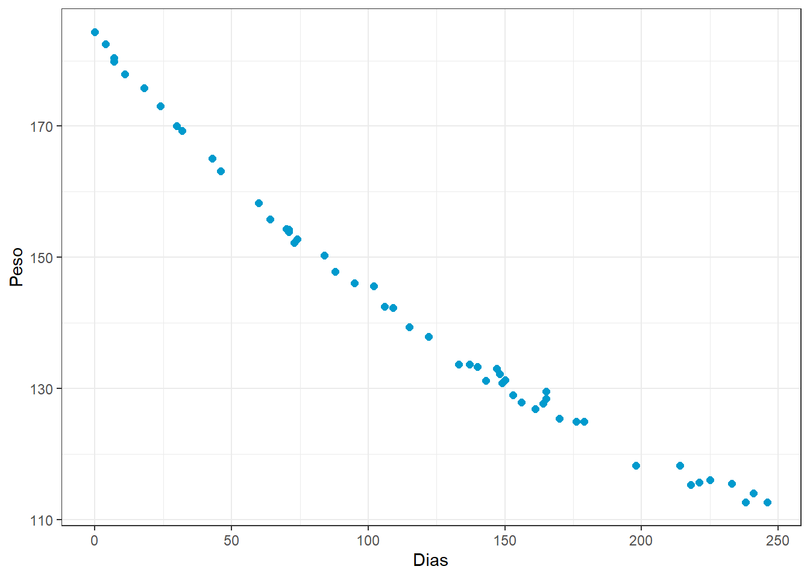
Considerando um modelo linear para tais dados, os resíduos obtidos são plotados na Figura 3.7. Pode-se observar claramente um padrão de não linearidade nos resíduos em relação aos valores ajustados, indicando o ajuste de um modelo não linear.
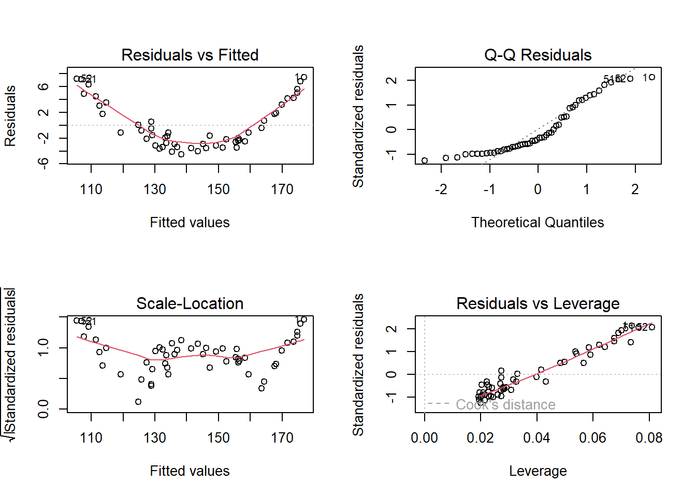
Pode-se pensar, portanto, em um modelo de regressão quadrático para aproximar o peso em função de dias. A curva plotada na Figura 3.6 consiste em tal modelo.
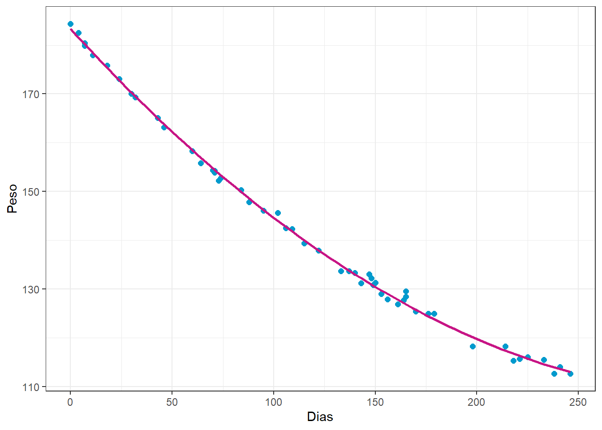
O modelo quadrático obtido e associado ao gráfico anterior é exposto a seguir.
Call:
lm(formula = Weight ~ Days + I(Days^2), data = rehab)
Residuals:
Min 1Q Median 3Q Max
-1.9034 -0.5842 -0.1188 0.4774 2.6315
Coefficients:
Estimate Std. Error t value Pr(>|t|)
(Intercept) 1.833e+02 3.521e-01 520.72 <2e-16 ***
Days -4.565e-01 6.520e-03 -70.03 <2e-16 ***
I(Days^2) 6.930e-04 2.614e-05 26.51 <2e-16 ***
---
Signif. codes: 0 '***' 0.001 '**' 0.01 '*' 0.05 '.' 0.1 ' ' 1
Residual standard error: 0.9386 on 49 degrees of freedom
Multiple R-squared: 0.9981, Adjusted R-squared: 0.998
F-statistic: 1.287e+04 on 2 and 49 DF, p-value: < 2.2e-16Os resíduos para o modelo quadrático são plotados na Figura 3.7.
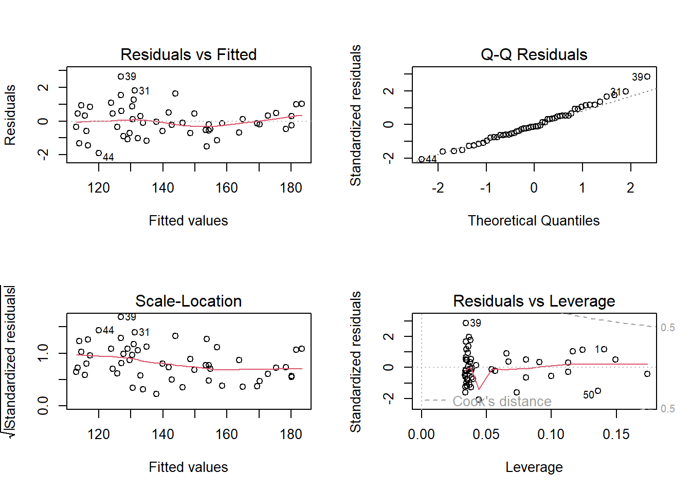
Finalmente, tal modelo pode ser escrito conforme segue.
\[ \hat{y} = 183,3 -0,456x + 6,930\times10^{-4}x^2 \]
3.2 Implementações em R
A seguir será expostos as implementações necessárias para obter os resultados do capítulo. Alguns exemplos aqui expostos são distintos dos do capítulo, sendo os resultados das implementações apresentados integralmente.
3.2.1 Caso 1 - regressão linear simples
Um exemplo de regressão linear simples já foi proposto no primeiro capítulo do livro.
3.2.2 Regressão linear múltipla
Carregando pacote para dados e gráfico.
library(caTools)
library(GGally)A ?fig-dataecn expõe algumas das observações dados macroeconômicos para regressão linear múltipla.
data(longley)
# ?longley
# dim(longley)
head(longley) |> kable()| GNP.deflator | GNP | Unemployed | Armed.Forces | Population | Year | Employed | |
|---|---|---|---|---|---|---|---|
| 1947 | 83.0 | 234.289 | 235.6 | 159.0 | 107.608 | 1947 | 60.323 |
| 1948 | 88.5 | 259.426 | 232.5 | 145.6 | 108.632 | 1948 | 61.122 |
| 1949 | 88.2 | 258.054 | 368.2 | 161.6 | 109.773 | 1949 | 60.171 |
| 1950 | 89.5 | 284.599 | 335.1 | 165.0 | 110.929 | 1950 | 61.187 |
| 1951 | 96.2 | 328.975 | 209.9 | 309.9 | 112.075 | 1951 | 63.221 |
| 1952 | 98.1 | 346.999 | 193.2 | 359.4 | 113.270 | 1952 | 63.639 |
Na Figura 3.10 visualiza-se a correlação entre as variáveis presentes no conjunto de dados.
ggpairs(longley) + theme_bw()
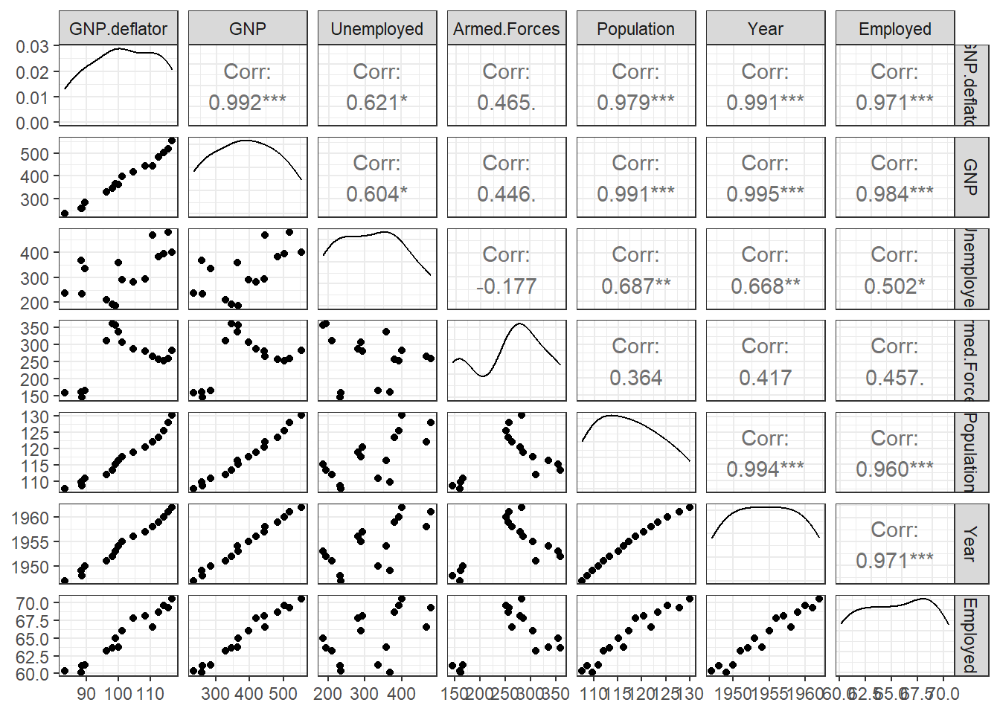
Padronizando os dados para evitar efeitos de escala e unidades de medida.
longley_scaled <- data.frame(scale(longley))Seprando dados de treino e teste.
set.seed(45)
tr <- round(0.8*nrow(longley_scaled),0)
treino <- sample(nrow(longley_scaled), tr, replace = F)
longley.tr <- longley_scaled[treino,]
longley.te <- longley_scaled[-treino,]Regressão múltipla para o número de pessoas empregadas em função das outras variáveis.
lm_mult <- lm(Employed ~., longley.tr)
summary(lm_mult)
Call:
lm(formula = Employed ~ ., data = longley.tr)
Residuals:
Min 1Q Median 3Q Max
-0.116622 -0.033371 0.002484 0.031364 0.121138
Coefficients:
Estimate Std. Error t value Pr(>|t|)
(Intercept) -0.006058 0.025665 -0.236 0.82123
GNP.deflator 0.154006 0.487336 0.316 0.76269
GNP -1.252420 1.218841 -1.028 0.34379
Unemployed -0.594009 0.165152 -3.597 0.01141 *
Armed.Forces -0.233556 0.061149 -3.819 0.00877 **
Population -0.092484 0.677281 -0.137 0.89585
Year 2.629894 0.676141 3.890 0.00808 **
---
Signif. codes: 0 '***' 0.001 '**' 0.01 '*' 0.05 '.' 0.1 ' ' 1
Residual standard error: 0.09174 on 6 degrees of freedom
Multiple R-squared: 0.9959, Adjusted R-squared: 0.9917
F-statistic: 241.1 on 6 and 6 DF, p-value: 7.003e-07Obtendo os coeficientes com as equações normais de mínimos quadrados passo a passo.
X <- model.matrix(~., data =longley.tr[,-7])
X (Intercept) GNP.deflator GNP Unemployed Armed.Forces Population
1951 1 -0.5079204 -0.5908091 -1.1710587 0.70742726 -0.7689652
1957 1 0.6225934 0.5540580 -0.2753583 0.27490604 0.4342950
1960 1 1.1600508 1.1560203 0.7894229 -0.13318708 1.1420190
1953 1 -0.2484582 -0.2244927 -1.4161189 1.35117978 -0.3349577
1956 1 0.2704662 0.3167321 -0.3973534 0.35968594 0.1883239
1949 1 -1.2492409 -1.3043364 0.5229601 -1.42356602 -1.0998977
1959 1 1.0117867 0.9558390 0.6631474 -0.07858307 0.8542141
1952 1 -0.3318568 -0.4094719 -1.3497707 1.41871632 -0.5971736
1950 1 -1.1287763 -1.0372705 0.1687464 -1.37470980 -0.9337126
1954 1 -0.1557931 -0.2473611 0.4116664 1.06810111 -0.1732292
1958 1 0.8449896 0.5719362 1.5920219 0.04355747 0.6506518
1947 1 -1.7310992 -1.5434331 -0.8960348 -1.46092666 -1.4111352
1962 1 1.4102465 1.6821336 0.8707530 0.31657752 1.8195537
Year
1951 -0.7351470
1957 0.5251050
1960 1.1552311
1953 -0.3150630
1956 0.3150630
1949 -1.1552311
1959 0.9451891
1952 -0.5251050
1950 -0.9451891
1954 -0.1050210
1958 0.7351470
1947 -1.5753151
1962 1.5753151
attr(,"assign")
[1] 0 1 2 3 4 5 6y <- longley.tr$Employed
beta_mat <- solve(t(X)%*%X)%*%t(X)%*%y
beta_mat [,1]
(Intercept) -0.006058494
GNP.deflator 0.154006386
GNP -1.252419887
Unemployed -0.594008870
Armed.Forces -0.233556488
Population -0.092484035
Year 2.629893534Existem algoritmos de seleção de variáveis que permitem a melhora do ajuste do modelo considerando a remoção de coeficientes não significativos. Um deles é a eliminação para trás. O critério de informação de Akaike, o qual leva em conta o erro dos modelos e a complexidade, é usado para selecionar os modelos.
lm_mult_red <- step(lm_mult, direction = "back")Start: AIC=-58.16
Employed ~ GNP.deflator + GNP + Unemployed + Armed.Forces + Population +
Year
Df Sum of Sq RSS AIC
- Population 1 0.000157 0.050653 -60.120
- GNP.deflator 1 0.000840 0.051337 -59.946
<none> 0.050496 -58.160
- GNP 1 0.008886 0.059382 -58.053
- Unemployed 1 0.108874 0.159370 -45.219
- Armed.Forces 1 0.122775 0.173271 -44.132
- Year 1 0.127324 0.177820 -43.795
Step: AIC=-60.12
Employed ~ GNP.deflator + GNP + Unemployed + Armed.Forces + Year
Df Sum of Sq RSS AIC
- GNP.deflator 1 0.00533 0.05598 -60.820
<none> 0.05065 -60.120
- GNP 1 0.04735 0.09801 -53.540
- Year 1 0.13005 0.18070 -45.586
- Armed.Forces 1 0.16981 0.22046 -43.001
- Unemployed 1 0.32078 0.37143 -36.219
Step: AIC=-60.82
Employed ~ GNP + Unemployed + Armed.Forces + Year
Df Sum of Sq RSS AIC
<none> 0.05598 -60.820
- GNP 1 0.044043 0.10002 -55.275
- Year 1 0.154642 0.21062 -45.594
- Armed.Forces 1 0.188671 0.24465 -43.647
- Unemployed 1 0.315797 0.37178 -38.207summary(lm_mult_red)
Call:
lm(formula = Employed ~ GNP + Unemployed + Armed.Forces + Year,
data = longley.tr)
Residuals:
Min 1Q Median 3Q Max
-0.124653 -0.039041 -0.002178 0.039448 0.114711
Coefficients:
Estimate Std. Error t value Pr(>|t|)
(Intercept) -0.006174 0.023368 -0.264 0.79830
GNP -1.336743 0.532824 -2.509 0.03644 *
Unemployed -0.604450 0.089976 -6.718 0.00015 ***
Armed.Forces -0.216546 0.041703 -5.193 0.00083 ***
Year 2.779766 0.591313 4.701 0.00154 **
---
Signif. codes: 0 '***' 0.001 '**' 0.01 '*' 0.05 '.' 0.1 ' ' 1
Residual standard error: 0.08365 on 8 degrees of freedom
Multiple R-squared: 0.9954, Adjusted R-squared: 0.9931
F-statistic: 434.8 on 4 and 8 DF, p-value: 2.19e-09Avaliando o modelo considerando os dados de treino.
metrics <- function(obs, pred) {
RSE <- sum((obs - pred)^2)
SST <- sum((obs - mean(obs))^2)
R2 <- 1 - RSE/SST
MAE <- mean(abs(obs - pred))
RMSE <- sqrt(mean((obs - pred)^2))
return(
data.frame(RMSE = RMSE,
MAE = MAE,
R2 = R2))
}metrics(longley.tr$Employed, lm_mult_red$fitted.values) RMSE MAE R2
1 0.06562145 0.05009978 0.9954209Avaliando os resíduos do modelo.
shapiro.test(lm_mult_red$residuals)
Shapiro-Wilk normality test
data: lm_mult_red$residuals
W = 0.96685, p-value = 0.854A Figura 3.11 expõe os gráficos de resíduos do modelo.
par(mfrow=c(2,2))
plot(lm_mult_red)
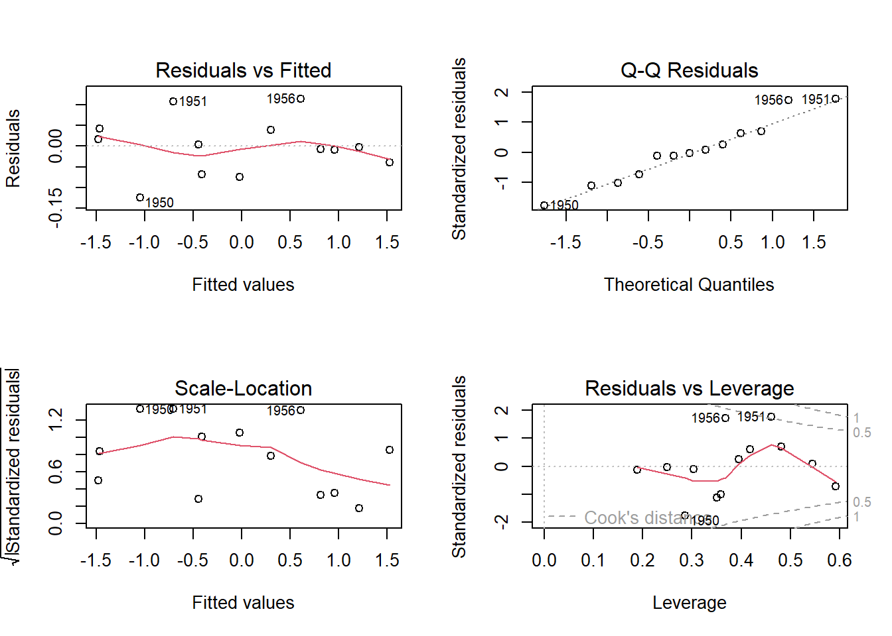
Avaliando o modelo com dados de teste.
pred_mult.te <- predict(lm_mult_red, newdata=longley.te)
metrics(longley.te$Employed, pred_mult.te) RMSE MAE R2
1 0.08438488 0.06111778 0.99227613.2.3 Regressão múltipla com variáveis categóricas
Pacote para dados e para codificação de variáveis dummy ou dicotômicas.
library(AER)
library(fastDummies)
library(dplyr)Carregando conjunto de dados com variáveis contínuas e uma categórica.
data(Grunfeld)
# ?Grunfeld
head(Grunfeld) invest value capital firm year
1 317.6 3078.5 2.8 General Motors 1935
2 391.8 4661.7 52.6 General Motors 1936
3 410.6 5387.1 156.9 General Motors 1937
4 257.7 2792.2 209.2 General Motors 1938
5 330.8 4313.2 203.4 General Motors 1939
6 461.2 4643.9 207.2 General Motors 1940A Figura 3.12 expõe gráficos de densidade, correlação aos pares e coeficientes de correlação de Pearson para cada nível da variável categórica firm (firma). Foram consideradas apenas três empresas para não dificultar a interpretação. Consegue fazer para as outras empresas?
ggpairs(Grunfeld[1:60,], columns = 1:4, aes(color = firm, alpha = 0.5)) + theme_bw()
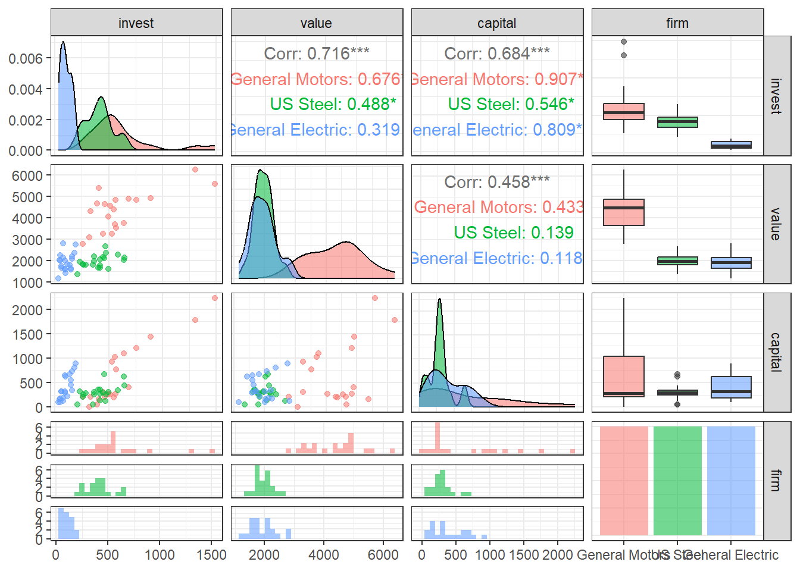
levels(Grunfeld$firm) [1] "General Motors" "US Steel" "General Electric"
[4] "Chrysler" "Atlantic Refining" "IBM"
[7] "Union Oil" "Westinghouse" "Goodyear"
[10] "Diamond Match" "American Steel" Codificando a variável firm em variáveis binárias.
Grunfeld2 <- dummy_cols(Grunfeld, select_columns = c("firm"))
Grunfeld2 <- Grunfeld2[,-c(4,16)] # removendo coluna da variável "firm" e coluna da última variável binária criada, a qual é desnecessária
head(Grunfeld) invest value capital firm year
1 317.6 3078.5 2.8 General Motors 1935
2 391.8 4661.7 52.6 General Motors 1936
3 410.6 5387.1 156.9 General Motors 1937
4 257.7 2792.2 209.2 General Motors 1938
5 330.8 4313.2 203.4 General Motors 1939
6 461.2 4643.9 207.2 General Motors 1940Padronizando variáveis regressoras contínuas.
Grunfeld2[,2:4] <- scale(Grunfeld2[,2:4])Dividindo dados de treino e teste.
set.seed(87)
tr <- round(0.8*nrow(Grunfeld2),0)
treino <- sample(nrow(Grunfeld2), tr, replace = F)
Grunfeld.tr <- Grunfeld2[treino,]
Grunfeld.te <- Grunfeld2[-treino,]Modelo de regressão linear múltipla com variáveis contínuas e categóricas.
lm_invest <- lm(invest ~ .-year, Grunfeld.tr)
summary(lm_invest)
Call:
lm(formula = invest ~ . - year, data = Grunfeld.tr)
Residuals:
Min 1Q Median 3Q Max
-177.977 -12.831 -0.035 13.412 197.819
Coefficients:
Estimate Std. Error t value Pr(>|t|)
(Intercept) 158.512 14.627 10.837 < 2e-16 ***
value 141.105 14.368 9.821 < 2e-16 ***
capital 76.787 5.533 13.877 < 2e-16 ***
`firm_General Motors` -25.829 47.263 -0.546 0.58547
`firm_US Steel` 125.052 26.010 4.808 3.44e-06 ***
`firm_General Electric` -202.654 25.570 -7.926 3.38e-13 ***
firm_Chrysler -7.712 17.307 -0.446 0.65646
`firm_Atlantic Refining` -76.358 17.943 -4.256 3.51e-05 ***
firm_IBM -3.460 16.713 -0.207 0.83625
`firm_Union Oil` -29.516 16.107 -1.833 0.06869 .
firm_Westinghouse -34.198 17.161 -1.993 0.04795 *
firm_Goodyear -56.218 17.078 -3.292 0.00122 **
`firm_Diamond Match` 10.857 15.651 0.694 0.48883
---
Signif. codes: 0 '***' 0.001 '**' 0.01 '*' 0.05 '.' 0.1 ' ' 1
Residual standard error: 46.73 on 163 degrees of freedom
Multiple R-squared: 0.9443, Adjusted R-squared: 0.9402
F-statistic: 230.5 on 12 and 163 DF, p-value: < 2.2e-16Outra forma de inclusão de variáveis dummy em modelos de regressão múltipla é na interação. A diferença é que no caso anterior as variáveis dummy mudam apenas a constante, enquanto neste caso, vão mudar a inclinação.
Supondo o caso da empresa General Electric que no gráfico pairs aparenta ter inclinação distinta das demais.
lm_invest2 <- lm(invest ~ . + I(capital*`firm_General Electric`), Grunfeld.tr)
summary(lm_invest2)
Call:
lm(formula = invest ~ . + I(capital * `firm_General Electric`),
data = Grunfeld.tr)
Residuals:
Min 1Q Median 3Q Max
-179.22 -12.00 1.06 12.39 184.42
Coefficients:
Estimate Std. Error t value Pr(>|t|)
(Intercept) 163.389 14.679 11.131 < 2e-16 ***
value 137.675 14.076 9.781 < 2e-16 ***
capital 87.834 7.203 12.194 < 2e-16 ***
year -4.245 4.641 -0.915 0.361718
`firm_General Motors` -34.125 47.124 -0.724 0.470018
`firm_US Steel` 121.936 25.838 4.719 5.11e-06 ***
`firm_General Electric` -193.220 26.307 -7.345 9.71e-12 ***
firm_Chrysler -8.519 16.928 -0.503 0.615497
`firm_Atlantic Refining` -92.113 18.817 -4.895 2.37e-06 ***
firm_IBM -3.521 16.284 -0.216 0.829092
`firm_Union Oil` -38.768 16.397 -2.364 0.019253 *
firm_Westinghouse -33.498 16.749 -2.000 0.047185 *
firm_Goodyear -64.341 17.112 -3.760 0.000237 ***
`firm_Diamond Match` 12.949 15.266 0.848 0.397568
I(capital * `firm_General Electric`) -44.741 14.660 -3.052 0.002662 **
---
Signif. codes: 0 '***' 0.001 '**' 0.01 '*' 0.05 '.' 0.1 ' ' 1
Residual standard error: 45.53 on 161 degrees of freedom
Multiple R-squared: 0.9478, Adjusted R-squared: 0.9433
F-statistic: 208.9 on 14 and 161 DF, p-value: < 2.2e-16A Figura 3.13 a seguir ilustra a mudança da inclinação para a empresa GE em relação a outras três selecionadas arbitrariamente. Em um caso com tantos níveis de variáveis dummy como este é difícil explorar todas possibilidades. Uma sugestão seria fazer um modelo com todas interações possíveis e posteriormente usar a função step para realizar eliminação para trás (backward elimination) para remover os termos não significativos.
Grunfeld_select <- Grunfeld |>
filter(firm %in% c("General Motors",
"US Steel",
"General Electric",
"IBM"))
g <- ggplot(Grunfeld_select, aes(x=capital,
y=invest)) +
geom_jitter(aes(color = firm, size=value), alpha =0.5) +
geom_smooth(aes(col=firm), method="lm", se=F) +
theme_bw()
g
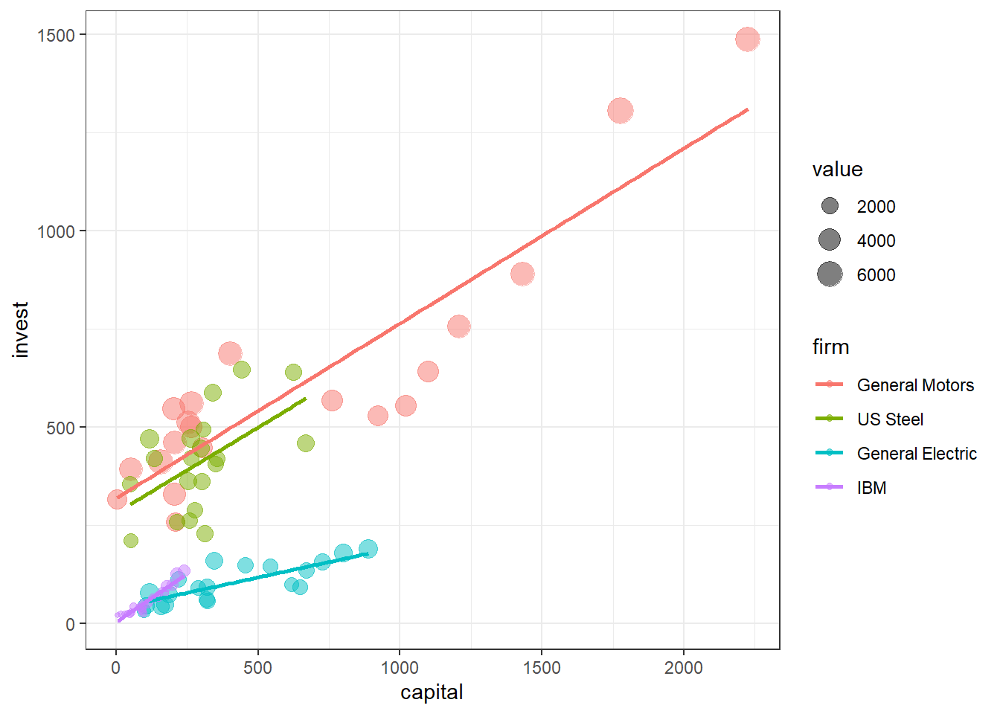
Avaliando o modelo considerando os dados de treino.
metrics(Grunfeld.tr$invest, lm_invest$fitted.values) RMSE MAE R2
1 44.97067 25.96427 0.9443401Avaliando o modelo considerando os dados de teste.
pred.invest <- predict(lm_invest, newdata = Grunfeld.te)
metrics(Grunfeld.te$invest, pred.invest) RMSE MAE R2
1 66.90304 36.76732 0.9391516Adicionando termo de interaçao ao modelo.
lm_invest_int <- lm(invest ~ . + value*capital, Grunfeld.tr)
summary(lm_invest_int)
Call:
lm(formula = invest ~ . + value * capital, data = Grunfeld.tr)
Residuals:
Min 1Q Median 3Q Max
-146.016 -11.418 -2.304 12.401 192.342
Coefficients:
Estimate Std. Error t value Pr(>|t|)
(Intercept) 66.0183 16.3423 4.040 8.27e-05 ***
value 102.4319 12.5440 8.166 8.77e-14 ***
capital -0.3027 10.8409 -0.028 0.977757
year 21.3233 4.8910 4.360 2.31e-05 ***
`firm_General Motors` 157.6237 45.0929 3.496 0.000611 ***
`firm_US Steel` 249.4813 26.0617 9.573 < 2e-16 ***
`firm_General Electric` -58.0340 27.4135 -2.117 0.035797 *
firm_Chrysler 39.1575 15.1944 2.577 0.010861 *
`firm_Atlantic Refining` 69.6205 23.1453 3.008 0.003053 **
firm_IBM 25.2365 14.0326 1.798 0.073983 .
`firm_Union Oil` 53.0164 16.8449 3.147 0.001964 **
firm_Westinghouse -2.1632 14.5174 -0.149 0.881735
firm_Goodyear 29.0504 17.4580 1.664 0.098054 .
`firm_Diamond Match` -7.8207 12.9832 -0.602 0.547777
value:capital 29.3232 3.2597 8.996 6.22e-16 ***
---
Signif. codes: 0 '***' 0.001 '**' 0.01 '*' 0.05 '.' 0.1 ' ' 1
Residual standard error: 38.2 on 161 degrees of freedom
Multiple R-squared: 0.9633, Adjusted R-squared: 0.9601
F-statistic: 301.5 on 14 and 161 DF, p-value: < 2.2e-16Consegue fazer os próximos passos para avaliar o modelo com interação nos dados de teste?
3.2.4 Regressão polinomial
Carregando pacote e dados.
library(MASS)rehab <- wtloss
# ?wtlossVisualizando o comportamento do peso (massa) em função de dias de treinamento.
ggplot(rehab, aes(x = Days, y = Weight)) +
geom_point(color = "deepskyblue3", size = 2) +
xlab("Dias") +
ylab("Peso") + theme_bw()Separando dados de treino e teste.
set.seed(53)
tr <- round(0.75*nrow(rehab),0)
treino <- sample(nrow(rehab), tr, replace = F)
rehab.tr <- rehab[treino,]
rehab.te <- rehab[-treino,]Estimando modelos linear e quadrático.
lm1 <- lm(Weight ~ Days, rehab.tr)
summary(lm1)lm2 <- lm(Weight ~ Days + I(Days^2), rehab.tr)
summary(lm2)Desempenho para dados de treino.
metrics(rehab.tr$Weight, lm1$fitted.values)metrics(rehab.tr$Weight, lm2$fitted.values)Desempenho dos modelos para dados de teste.
pred.lm1 <- predict(lm1, newdata = rehab.te)
metrics(rehab.te$Weight, pred.lm1)pred.lm2 <- predict(lm2, newdata = rehab.te)
metrics(rehab.te$Weight, pred.lm2)Plotando o modelo com dados de teste.
ggplot() +
geom_point(data = rehab.tr, mapping = aes(x = Days, y = Weight), color = "deepskyblue3", size = 2) +
geom_smooth(data = rehab.te, mapping = aes(x = Days, y = Weight),
method = "lm", formula = y ~ x + I(x^2), se = F, col = "mediumvioletred") +
ggtitle("Peso vs Dias (dados de teste)") +
xlab("Dias") +
ylab("Peso") + theme_bw()Referências
Hastie, T., Tibshirani, R., Friedman, J. H., & Friedman, J. H. (2009). The elements of statistical learning: data mining, inference, and prediction (Vol. 2, pp. 1-758). New York: springer.
Gareth, J., Daniela, W., Trevor, H., & Robert, T. (2013). An introduction to statistical learning: with applications in R. Spinger.